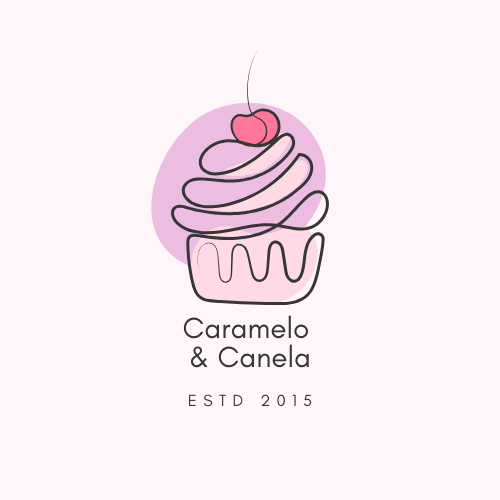

Bem-vindo à Caramelo & Canela, onde cada doce é uma celebração de sabores e carinho! Nossa confeitaria combina tradição e criatividade para oferecer sobremesas que encantam o paladar e aquecem o coração. De bolos artesanais a docinhos gourmet, cada criação é feita com ingredientes selecionados e muito amor. Venha se deliciar conosco e transformar momentos especiais em memórias inesquecíveis!
Um bolo de chocolate super fofinho com recheio e cobertura de morango e ganache de chocolate. Uma combinação simplesmente perfeita!